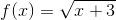
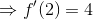
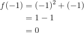

Definiție. Interpretare geometrică
Definiție
Fie  un interval de numere reale și
un interval de numere reale și  punct de acumulare.
punct de acumulare.
Considerăm funcția  .
.
Graficul funcției este:

Avem:
Dacă punctul  se aproprie de
se aproprie de  , adică , coarda devine tangentă la graficul funcției
, adică , coarda devine tangentă la graficul funcției  în punctul .
în punctul .
Notând cu  unghiul dintre și axa
unghiul dintre și axa  , va rezulta că:
, va rezulta că:
.
Astfel, introducem următoarele noțiuni:
Definiția FD1: Derivată într-un punct. Funcție derivabilă într-un punct
Spunem că funcția  are derivată în punctul
are derivată în punctul  dacă există
dacă există
.
În cazul în care limita de mai sus este finită (adică nu este  sau
sau  ), funcția este derivabilă în punctul .
), funcția este derivabilă în punctul .
Limita anterioară se notează și se numește derivata funcției în punctul .
Așadar,  . (Citim derivat în .)
. (Citim derivat în .)
Definiția FD2: Funcție derivabilă
Funcția se numește derivabilă pe mulțimea dacă este derivabilă în orice punct al ei.
Astfel, introducem funcția , care asociază fiecărui punct din mulțimea  derivata sa.
derivata sa.
Funcția  introdusă se numește derivata funcției pe mulțimea .
introdusă se numește derivata funcției pe mulțimea .
Observații:
- Observăm că pentru a studia acest capitol al analizei matematice este necesar să avem cunoștințe generale de calcul al limitelor de funcții. Pentru aceasta, înainte de a avansa în lecturarea acestui ghid, te sfătuim să accesezi și să consulți ghidul Limite de funcții.
- Dacă notăm în expresia din relația
 cu , adică
cu , adică  , vom obține că:
, vom obține că:

Atunci, pentru , avem că .
Derivata funcției în punctul devine:
.
Formula  ne va permite să deducem mai târziu formulele derivatelor funcțiilor elementare.
ne va permite să deducem mai târziu formulele derivatelor funcțiilor elementare.
Exemple:
- Fie
 ,
,  . Să se studiere derivabilitatea funcției în orice punct de acumulare
. Să se studiere derivabilitatea funcției în orice punct de acumulare  .
.
Rezolvare:
Calculăm cu ajutorul formulei  .
.
.
- Să se arate că următoarele funcții au derivată în punctele specificate și să se stabilească dacă sunt derivabile în aceste puncte.
- ,
 , ;
, ; - , , .
Rezolvare:
- Calculăm
 cu ajutorul formulei .
cu ajutorul formulei .

Deci funcția are derivată în punctul .
În plus,  .
.
În concluzie, funcția este derivabilă în .
- Calculăm cu ajutorul formulei .
Atunci avem că are derivată în .
Dar . Deci funcția nu este derivabilă în punctul .
Interpretare geometrică
Derivata unei funcții , într-un punct de acumulare are o interpretare geometrică pentru graficul funcției date.
Pentru că derivata unei funcții într-un punct poate fi finită sau , distingem următoarele cazuri:
- Dacă , atunci acest număr reprezintă coeficientul unghiular al tangentei la grafic în punctul . Ecuația tangentei este următoarea:
.
Demonstrație:
Deoarece panta tangentei la graficul funcției în punctul este , vom nota:
(Unghiul  este unghiul dintre axa
este unghiul dintre axa  și tangenta la grafic.)
și tangenta la grafic.)
Reamintim care este ecuația dreptei determinată de un punct și panta sa  .
.

În cazul în care graficul funcției date conține punctul , avem că .
Dar .
Atunci, ecuația tangentei la graficul funcției în punctul devine:
.
- Dacă , atunci tangenta la graficul funcției date în punctul este dreapta de ecuație
 .
.
Exemple:
- Să se determine ecuația tangentei la graficul funcției , în punctul
 .
.
Rezolvare:
Determinăm ecuația tangentei aplicând formula .
.
Limita calculată este 1, deoarece este o limită remarcabilă. Pentru mai multe detalii, accesează pagina Limitele funcțiilor elementare (ultima parte), din cadrul ghidului Limite de funcții.
.
Ecuația tangentei devine:
Rezultă că dreapta  (prima bisectoare) este tangetă la graficul funcției în punctul , așa cum vei putea observa și în graficul de mai jos.
(prima bisectoare) este tangetă la graficul funcției în punctul , așa cum vei putea observa și în graficul de mai jos.

- Să se determine ecuația tangentei la graficul funcției , în punctul
 .
.
Rezolvare:
Ecuația tangentei se determină cu ajutorul formulei .
Calculăm .

.
Calculăm .
.
Ecuația tangentei devine:
Într-adevăr, lecturând graficul de mai jos, se poate observa faptul că dreapta este tangetă la graficul funcției în punctul .

Teorema FD3: Legătura dintre continuitatea și derivabilitatea unei funcții
Fie funcția , . Dacă funcția este derivabilă într-un punct, atunci ea este continuă în acel punct.
Deci avem:
derivabilă  continuă
continuă
Această teoremă nu are o reciprocă, dar se poate enunța contrarea reciprocei astfel:
Propoziția FD4:
Dacă nu este continuă într-un punct, atunci ea nu este derivabilă în acel punct.
De accea, în studiul derivabilității se recomandă mai întâi studiul continuității.
Exemplu:
Funcția modul ,  este continuă în punctul , dar nu este derivabilă în acest punct. Rezolvarea acestei exercițiu se va face în următorul capitol.
este continuă în punctul , dar nu este derivabilă în acest punct. Rezolvarea acestei exercițiu se va face în următorul capitol.